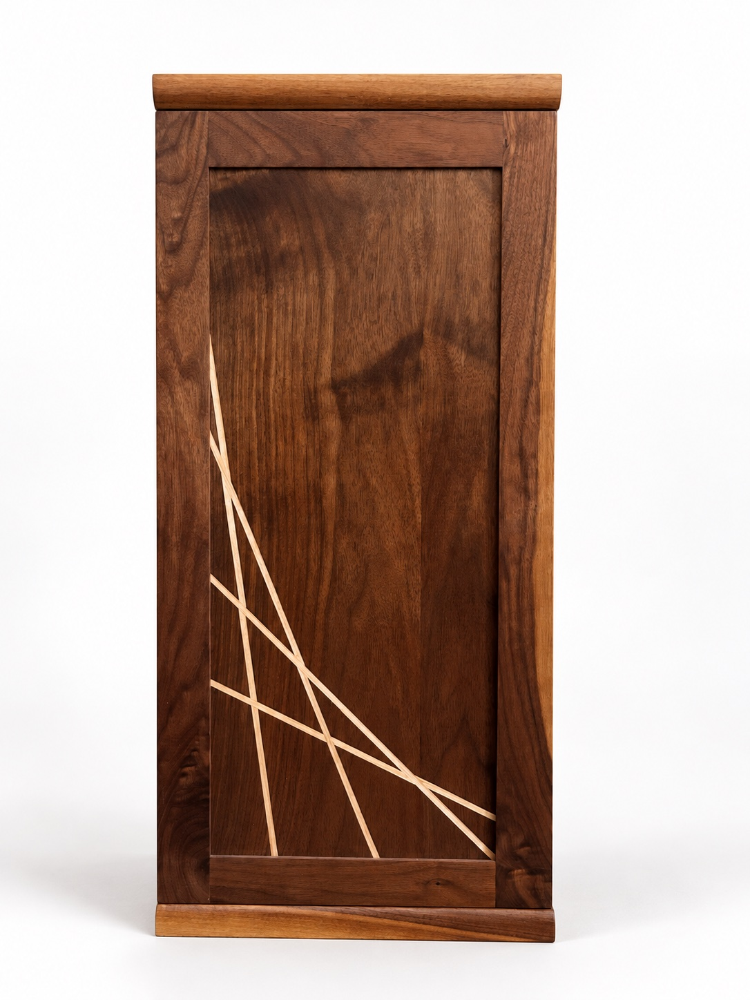
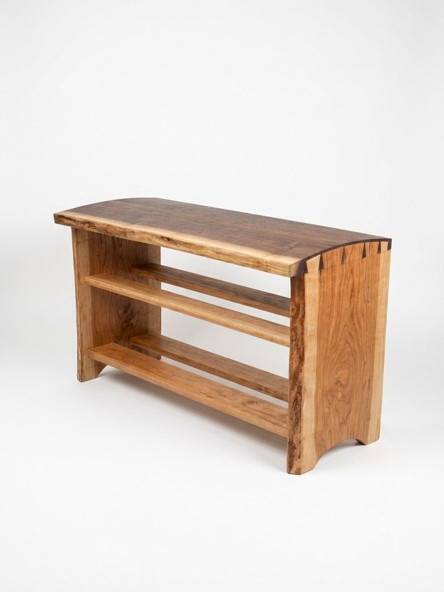
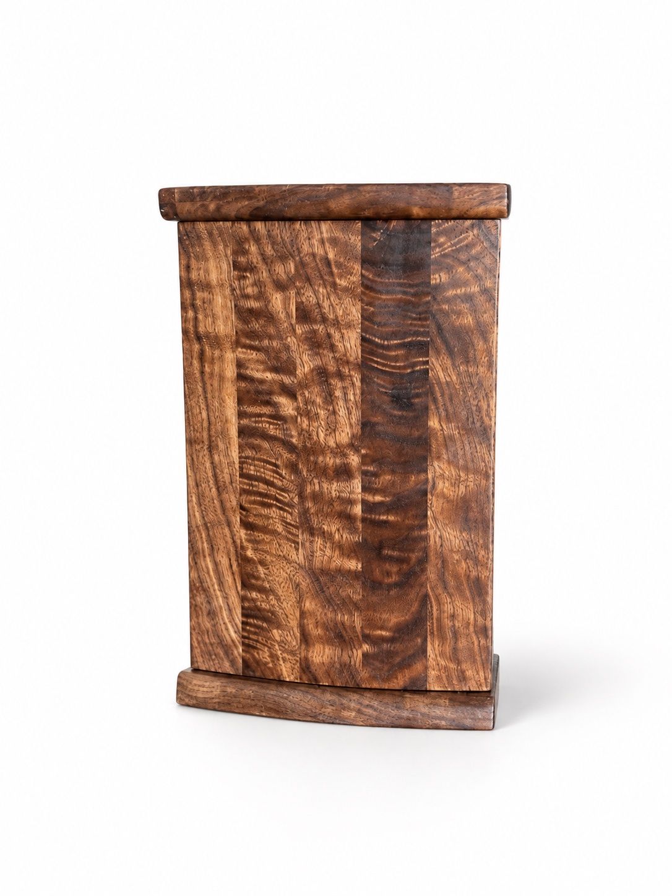
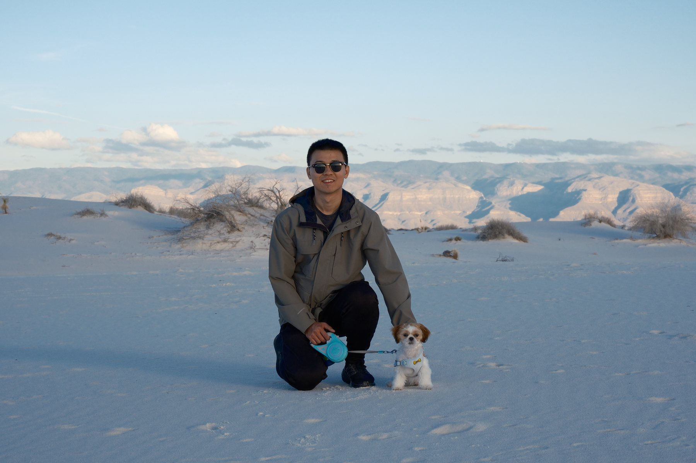

木作，是一门与材料相处的功夫
认识 Tim 与句芒木作 ↗“木头会生长，也会随四季呼吸。我们尊重每一道纹理、每一处比例，也珍视那些让一件器物值得长久留在家中的细节。”

作品背后的故事 / 01
从回家的
日常开始。
Oakton 是搬到弗吉尼亚州北部后制作的第一件作品。为了新家的日常所需，它以弧形燕尾榫、自然边与边材的天然色差，回应实用与美感。
读 Oakton 的故事 ↗

定制委托
心里有件想做的家具？
告诉我们你的想法、空间与需求。我们愿意听你慢慢说，并为项目提供免费报价。
联系句芒，获取免费报价 ↗也欢迎通过 Instagram 联系我们。